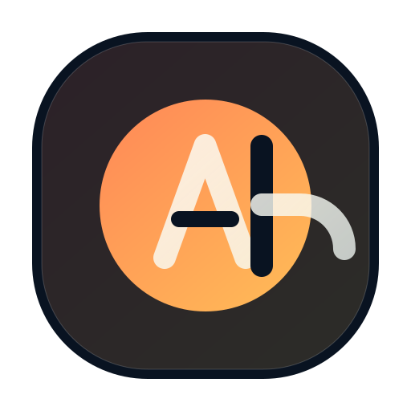

Pouco texto, mas direcao clara.
Meu foco em TI esta em criar paginas, produtos e interfaces com aparencia forte, boa organizacao e leitura limpa entre desktop e mobile.

Augusto PradoSou Augusto Prado. Atuo com desenvolvimento web, UI/UX e construcao de experiencias digitais com presenca visual, estrutura clara e acabamento moderno.
Meu foco em TI esta em criar paginas, produtos e interfaces com aparencia forte, boa organizacao e leitura limpa entre desktop e mobile.
Gosto de tirar ideias do papel e transformar em experiencias digitais bem resolvidas, com estetica atual e base tecnica objetiva.
HTML, CSS, JavaScript e estrutura responsiva para web.
Hierarquia visual, interfaces modernas e navegacao objetiva.
MVPs, paginas estrategicas e fluxos pensados para validacao.
Projetos com acabamento forte para apresentar, testar e publicar.
Conceito de plataforma universitaria com foco em experiencia digital e interacao.
Estrutura comercial digital com interface clara, fluxo direto e presenca visual.
Paginas para posicionamento profissional, negocio e demonstracao de produto.